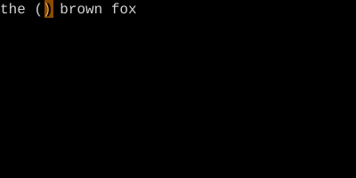
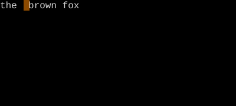

Inner Word vs Around Word
Name a chunk of text directly instead of motioning to its ends.
Text objects produce a (start, end) range without using the cursor. iw is the word the cursor is in. aw is that word plus surrounding whitespace.
Up to now, the noun in operator+motion has been a motion — a path from where you are to where you'll end up. Text objects change that. They name a chunk of text directly, no path required. The first one to learn is the word.
| Key | Note |
|---|---|
| d | |
| i | |
| w |
| Key | Note |
|---|---|
| d | |
| a | |
| w |
| Key | Note |
|---|---|
| c | |
| i | |
| w |
| Key | Note |
|---|---|
| y | |
| a | |
| w |
Reference
| Object | Range |
|---|---|
| iw | Word (keyword chars only) |
| aw | Word + surrounding whitespace |
| iW | WORD (whitespace boundaries) |
| aW | WORD + surrounding whitespace |
Worked example — ciw vs caw
Inner word vs around word.



i = inner (just the thing). a = around (thing + its delimiters or trailing space).
See also: The Vim Grammar, Quote Text Objects, Bracket Text Objects, Word Motions